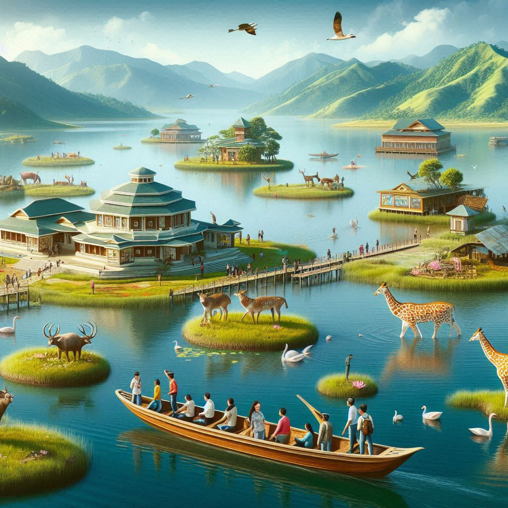
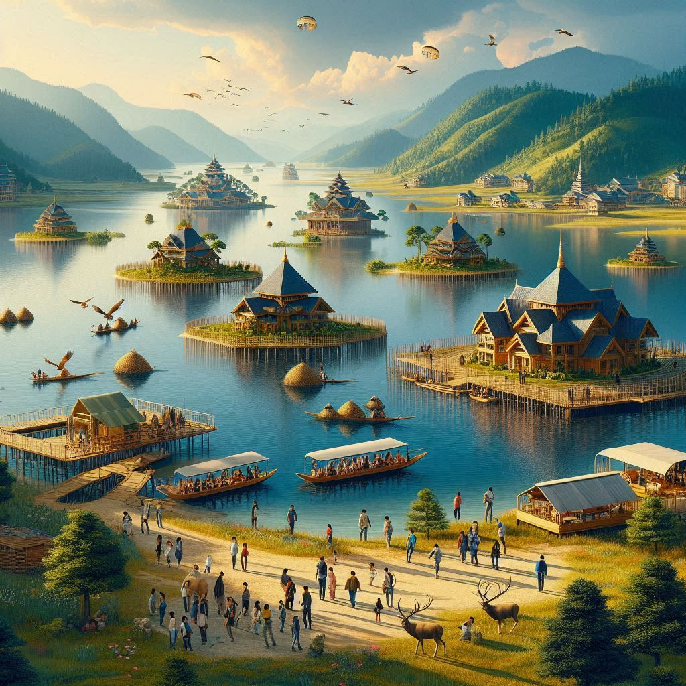

Manipur, known as the "Switzerland of India" due to its picturesque landscapes, is a growing hub for tourism in Northeast India. The state offers a blend of natural beauty, cultural heritage, and adventure, attracting both domestic and international visitors. Here's an overview of the key tourist attractions and activities in Manipur:
1. Loktak Lake
Loktak Lake is one of the largest freshwater lakes in Northeast India and is known for its unique phumdis (floating islands). The lake is located in the Moirang area and is a popular destination for nature lovers and adventure enthusiasts.
Visitors can enjoy boat rides on the lake and explore the Keibul Lamjao National Park, which is home to the Sangai (Manipur's state animal), a rare species of deer.
2. Imphal
The capital city of Manipur, Imphal, is known for its rich history, culture, and vibrant markets.
Imphal War Cemetery and the Kangla Fort are popular historical sites, offering insights into the state's past and its role during the World War II.
The Shree Govindajee Temple, Manipur State Museum, and Ima Keithel (Mother's Market) are key attractions that highlight the state's religious and cultural heritage.
3. Shirui Hills
Located in the Ukhrul district, the Shirui Hills are famous for the rare Shirui Lily, which blooms in May-June. This flower is unique to the region and has become an icon for the state.
The hills offer breathtaking views of the valley, making it an ideal location for trekking and nature walks.
4. Kangla Fort
Kangla Fort, situated in the heart of Imphal, was once the seat of the ancient kingdom of Manipur. Today, it stands as a symbol of the state's royal past and is an important cultural and historical landmark.
The fort houses various temples and monuments, and it is a serene place to explore the rich history of the region.
5. Keibul Lamjao National Park
This national park is located on the southern shore of Loktak Lake and is the only floating park in the world. It is home to the endangered Sangai deer and is a must-visit for wildlife enthusiasts and nature lovers.
The park offers an opportunity for birdwatching and boating in the surrounding areas.


6. Nungbi Village
Nungbi, located in the Ukhrul district, is known for its traditional handicrafts and vibrant cultural festivals.
The village is famous for its handcrafted shawls, scarves, and woolen garments. It provides a glimpse into the daily life and traditions of the local Tangkhul Naga people.
7. Khongjom War Memorial
Located in the Thoubal district, the Khongjom War Memorial commemorates the sacrifices made during the Anglo-Manipur War of 1891. The memorial honors the brave soldiers who fought to protect the sovereignty of Manipur.
8. Bishnupur
Bishnupur is a small town in the Imphal West district, known for its historic temples and ancient art forms, especially the Manipuri classical dance.
The Radha Krishna Temple and Loktak Lake are key attractions, while the town is also famous for its hand-woven textiles and pottery.
9. Adventure Tourism
Manipur offers several opportunities for trekking, mountain biking, and fishing in its scenic landscapes. The region’s rugged hills, valleys, and lakes make it an ideal destination for adventure enthusiasts.
10. Cultural and Heritage Tourism
Manipur's rich cultural heritage, including its traditional dance forms like Manipuri dance and the Raas Leela, make it a significant destination for those interested in performing arts and traditional festivals.
The Yaoshang Festival (similar to Holi) and the Lai Haraoba Festival (a traditional festival of the Meitei people) are popular cultural events that attract tourists from across India and abroad.
Conclusion:
Manipur offers a diverse range of attractions, from natural beauty and wildlife to cultural heritage and adventure. Its combination of scenic landscapes, historical landmarks, and rich traditions makes it a must-visit destination for tourists seeking an offbeat experience in Northeast India.